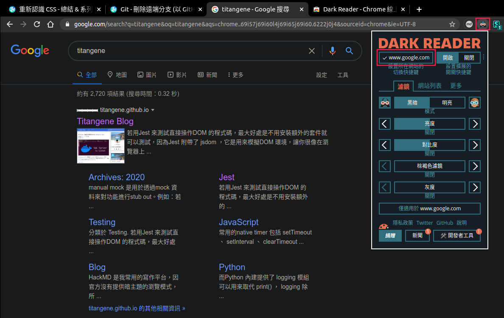

<!DOCTYPE html><html><head><meta charset="utf-8"><title>推薦 Chrome Extension：Markdown &amp; 頁面主題篇 | Titangene Blog</title><meta http-equiv="X-UA-Compatible" content="IE=edge"><meta name="viewport" content="width=device-width,initial-scale=1,maximum-scale=1"><meta name="HandheldFriendly" content="True"><meta name="apple-mobile-web-app-capable" content="yes"><meta name="author" content="Titangene"><link rel="shortcut icon" href="/favicon.ico"><link rel="alternate" href="/atom.xml" title="Titangene Blog"><meta name="description" content="本篇推薦一些我常用的 Chrome Extension，包含複製分頁的 Markdown 格式的連結、將頁面變為暗主題。"><meta property="og:type" content="article"><meta property="og:title" content="推薦 Chrome Extension：Markdown &amp; 頁面主題篇"><meta property="og:url" content="https://titangene.github.io/article/recommend-chrome-extension-1.html"><meta property="og:site_name" content="Titangene Blog"><meta property="og:description" content="本篇推薦一些我常用的 Chrome Extension，包含複製分頁的 Markdown 格式的連結、將頁面變為暗主題。"><meta property="og:locale" content="zh_TW"><meta property="og:image" content="https://titangene.github.io/images/cover/chrome-extension.jpg"><meta property="article:published_time" content="2020-08-09T15:56:36.000Z"><meta property="article:modified_time" content="2020-08-16T15:25:59.000Z"><meta property="article:author" content="Titangene"><meta property="article:tag" content="Markdown"><meta property="article:tag" content="w3HexSchool"><meta property="article:tag" content="Chrome"><meta property="article:tag" content="Chrome Extension"><meta property="article:tag" content="Theme"><meta name="twitter:card" content="summary_large_image"><meta name="twitter:image" content="https://titangene.github.io/images/cover/chrome-extension.jpg"><meta name="twitter:creator" content="@titangeneTW"><meta name="twitter:site" content="@titangene_blog"><meta property="fb:admins" content="100001106016019"><meta property="fb:app_id" content="2470546159839111"><meta property="og:image:width" content="1200"><meta property="og:image:height" content="630"><meta name="google-site-verification" content="AaJ39L7h-nWwJjXJMhAMtXSF6H6BUgGWXC80kYvLic8"><link href="https://fonts.googleapis.com/css2?family=Roboto&display=swap" rel="stylesheet"><link href="https://fonts.googleapis.com/css?family=Source+Code+Pro&display=swap" rel="stylesheet"><link rel="stylesheet" href="https://cdnjs.cloudflare.com/ajax/libs/font-awesome/5.13.0/css/all.min.css"><link rel="stylesheet" href="https://unpkg.com/gitalk/dist/gitalk.css"><link rel="stylesheet" href="/style.css"><script async src="https://www.googletagmanager.com/gtag/js?id=G-KX04S5LSX1"></script><script>!function(a){function n(){dataLayer.push(arguments)}a.dataLayer=a.dataLayer||[],n("js",new Date),n("config","G-KX04S5LSX1")}(window)</script><script>function setLoadingBarProgress(e){document.getElementById("loading-bar").style.width=e+"%"}</script><meta name="generator" content="Hexo 4.2.0"><link rel="alternate" href="/atom.xml" title="Titangene Blog" type="application/atom+xml"></head></html><body><div id="loading-bar-wrapper"><div id="loading-bar"></div></div><script>setLoadingBarProgress(20)</script><header class="l_header"><div class="wrapper"><div class="nav-main container container--flex"><a class="logo flat-box" href="/">Titangene Blog</a><div class="menu"><ul class="h-list"><li><a class="flat-box nav-home" href="/">Home</a></li><li><a class="flat-box nav-archives" href="/archives">Archives</a></li></ul><div class="underline"></div></div><div class="m_search"><form name="searchform" class="form u-search-form"><input type="text" class="input u-search-input" placeholder="Search"> <i class="fas fa-search"></i></form></div><ul class="switcher h-list"><li class="s-search"><a class="fas fa-search" href="javascript:void(0)"></a></li><li class="s-menu"><a class="fas fa-bars" href="javascript:void(0)"></a></li></ul></div><div class="nav-sub container container--flex"><a class="logo flat-box" href="/">Titangene Blog</a><ul class="switcher h-list"><li class="s-comment"><a class="far fa-comment-alt" href="javascript:void(0)"></a></li><li class="s-top"><a class="fas fa-arrow-up" href="javascript:void(0)"></a></li><li class="s-toc"><a class="fas fa-list-ol" href="javascript:void(0)"></a></li></ul></div></div></header><aside class="menu-phone"><nav><a href="/" class="nav-home nav">Home </a><a href="/archives" class="nav-archives nav">Archives</a></nav></aside><script>setLoadingBarProgress(40)</script><div class="l_body"><div class="container clearfix"><div class="l_main"><article id="post-recommend-chrome-extension-1" class="post white-box article-type-post" itemscope itemprop="blogPost"><section class="meta"><h2 class="title"><a href="/article/recommend-chrome-extension-1.html">推薦 Chrome Extension：Markdown &amp; 頁面主題篇</a></h2><span class="post-time"><span class="post-meta-item-icon"><i class="fa fa-calendar"></i> </span><span class="post-meta-item-text">發表於</span> <time title="建立時間：2020-08-09 23:56:36" itemprop="dateCreated datePublished" datetime="2020-08-09T23:56:36+08:00">2020-08-09 </time><span class="post-meta-divider">|</span> <span class="post-meta-item-icon"><i class="fa fa-calendar-check"></i> </span><span class="post-meta-item-text">更新於</span> <time title="修改時間：2020-08-16 23:25:59" itemprop="dateModified" datetime="2020-08-16T23:25:59+08:00">2020-08-16</time></span> <span class="comments-count"><span class="post-meta-divider">|</span> <span class="post-meta-item-icon"><i class="fas fa-comment"></i> </span><a href="https://titangene.github.io/article/recommend-chrome-extension-1.html#comments" class="article-comment-count">留言</a></span><div class="post-category"><span class="post-meta-item-icon"><i class="fa fa-folder"></i> </span><span class="post-meta-item-text">分類於</span> <span itemprop="about" itemscope itemtype="http://schema.org/Thing"><a href="/categories/tools/" itemprop="url" rel="index"><span itemprop="name">Tools</span></a></span></div></section><section class="toc-wrapper"><h3>目錄</h3><ol class="toc"><li class="toc-item toc-level-1"><a class="toc-link" href="#Markdown"><span class="toc-text">Markdown</span></a><ol class="toc-child"><li class="toc-item toc-level-2"><a class="toc-link" href="#Copy-as-Markdown"><span class="toc-text">Copy as Markdown</span></a></li><li class="toc-item toc-level-2"><a class="toc-link" href="#拷貝為-Markdown"><span class="toc-text">拷貝為 Markdown</span></a></li></ol></li><li class="toc-item toc-level-1"><a class="toc-link" href="#頁面主題"><span class="toc-text">頁面主題</span></a><ol class="toc-child"><li class="toc-item toc-level-2"><a class="toc-link" href="#Dark-Reader"><span class="toc-text">Dark Reader</span></a></li><li class="toc-item toc-level-2"><a class="toc-link" href="#Stylus"><span class="toc-text">Stylus</span></a></li><li class="toc-item toc-level-2"><a class="toc-link" href="#Medium-Code-Highlighter"><span class="toc-text">Medium Code Highlighter</span></a></li></ol></li></ol></section><section class="article typo"><div class="article-entry" itemprop="articleBody"><p></p><p>本篇推薦一些我常用的 Chrome Extension，包含複製分頁的 Markdown 格式的連結、將頁面變為暗主題。</p><a id="more"></a><blockquote><p>其他推薦 Chrome Extension 相關文章可參閱 <a href="https://titangene.github.io/tags/chrome-extension/">推薦 Chrome Extension 系列文章</a>。</p></blockquote><h1 id="Markdown"><a class="header-anchor" href="#Markdown"></a>Markdown</h1><h2 id="Copy-as-Markdown"><a class="header-anchor" href="#Copy-as-Markdown"></a>Copy as Markdown</h2><p>下載連結：<a href="https://chrome.google.com/webstore/detail/fkeaekngjflipcockcnpobkpbbfbhmdn" target="_blank" rel="noopener">Copy as Markdown</a></p><p>功能：</p><ul><li>複製當前分頁的 Markdown 格式的連結</li><li>複製該視窗的所有分頁的 Markdown 格式的連結</li></ul><p>點擊 Extension 的圖案，可看到多種選項功能。其中的「Current tab link」選項會將該分頁連結的 Markdown 格式複製至剪貼簿。</p><p>假設要複製此 blog 文章的連結，剪貼簿內儲存的連結格式如下：</p><figure class="highlight plain"><table><tr><td class="gutter"><pre><span class="line">1</span><br></pre></td><td class="code"><pre><code class="hljs plain">[重新認識 CSS - 總結 &amp; 系列目錄 | Titangene Blog](https:&#x2F;&#x2F;titangene.github.io&#x2F;article&#x2F;css-series-catalog.html)<br></code></pre></td></tr></table></figure><p>此 Extension 會將頁面標題 (即 <code>&lt;title&gt;</code> 標籤的內容) 和連結變為 Markdown 格式。</p><p></p><p>還有更厲害的！點擊「All tab link (n)」選項會複製該視窗的所有分頁連結，並以 Markdown 的無序清單的形式 (即 <code>*</code> ) 複製至剪貼簿。</p><p>以上圖為例，此視窗開了 3 個分頁，所以我點擊「All tab link (n)」選項會複製以下內容：</p><figure class="highlight plain"><table><tr><td class="gutter"><pre><span class="line">1</span><br><span class="line">2</span><br><span class="line">3</span><br></pre></td><td class="code"><pre><code class="hljs plain">* [重新認識 CSS - 總結 &amp; 系列目錄 | Titangene Blog](https:&#x2F;&#x2F;titangene.github.io&#x2F;article&#x2F;css-series-catalog.html)<br>* [Git - 刪除遠端分支 (以 GitHub、GitLab 為例) | Titangene Blog](https:&#x2F;&#x2F;titangene.github.io&#x2F;article&#x2F;git-delete-remote-branch.html)<br>* [深入 Git：Git 物件儲存 - blob 物件 | Titangene Blog](https:&#x2F;&#x2F;titangene.github.io&#x2F;article&#x2F;git--blob-object.html)<br></code></pre></td></tr></table></figure><p>如果只想要複製標題或連結而已，可以點擊「All tab title」或「All tab URL」選項。格式如下：</p><figure class="highlight plain"><table><tr><td class="gutter"><pre><span class="line">1</span><br><span class="line">2</span><br><span class="line">3</span><br></pre></td><td class="code"><pre><code class="hljs plain">* 重新認識 CSS - 總結 &amp; 系列目錄 | Titangene Blog<br>* Git - 刪除遠端分支 (以 GitHub、GitLab 為例) | Titangene Blog<br>* 深入 Git：Git 物件儲存 - blob 物件 | Titangene Blog<br></code></pre></td></tr></table></figure><figure class="highlight plain"><table><tr><td class="gutter"><pre><span class="line">1</span><br><span class="line">2</span><br><span class="line">3</span><br></pre></td><td class="code"><pre><code class="hljs plain">* https:&#x2F;&#x2F;titangene.github.io&#x2F;article&#x2F;css-series-catalog.html<br>* https:&#x2F;&#x2F;titangene.github.io&#x2F;article&#x2F;git-delete-remote-branch.html<br>* https:&#x2F;&#x2F;titangene.github.io&#x2F;article&#x2F;git--blob-object.html<br></code></pre></td></tr></table></figure><p>寫 Markdown 筆記時，若想一次複製多個分頁的連結，並且是 Markdown 格式，用了這個「Copy as Markdown」Extension 就不用自己手動打了！</p><h2 id="拷貝為-Markdown"><a class="header-anchor" href="#拷貝為-Markdown"></a>拷貝為 Markdown</h2><p>下載連結：<a href="https://chrome.google.com/webstore/detail/copy-as-markdown/dgoenpnkphkichnohepecnmpmihnabdg" target="_blank" rel="noopener">拷貝為 Markdown</a></p><p>功能：將選取的內容轉為 Markdown 格式</p><p>假設我要複製以下選取的內容，並且可以取得 Markdown 格式，只要選取該內容後，並點擊 Extension 的圖案，就會將內容複製至剪貼簿：</p><p></p><p>複製的內容如下。可以看到連標題 (即 <code>##</code> )、無序列表 (即 <code>*</code> )、引用 (即 <code>&gt;</code> ) 都能自動轉成 Markdown 格式：</p><figure class="highlight plain"><table><tr><td class="gutter"><pre><span class="line">1</span><br><span class="line">2</span><br><span class="line">3</span><br><span class="line">4</span><br><span class="line">5</span><br><span class="line">6</span><br><span class="line">7</span><br><span class="line">8</span><br><span class="line">9</span><br><span class="line">10</span><br><span class="line">11</span><br><span class="line">12</span><br><span class="line">13</span><br></pre></td><td class="code"><pre><code class="hljs plain">## Assigning property values, Cascading, and Inheritance<br><br>瞭解在 CSS 中，繼承和權重這些重要的觀念之後，接著就可以更深入的瞭解 CSS 是如何處理屬性值的。系列如下：<br><br>* [重新認識 CSS - Inheritance (繼承)](https:&#x2F;&#x2F;titangene.github.io&#x2F;article&#x2F;css-inheritance.html)<br>* [重新認識 CSS - Cascading &amp; Specificity](https:&#x2F;&#x2F;titangene.github.io&#x2F;article&#x2F;css-cascading-and-specificity.html)<br>* [重新認識 CSS - CSS 如何處理屬性值](https:&#x2F;&#x2F;titangene.github.io&#x2F;article&#x2F;css-value-processing.html)<br><br>&gt; 對應 spec 的以下幾篇：<br>&gt;<br>&gt; * [CSS 2.2 - 6. Assigning property values, Cascading, and Inheritance](https:&#x2F;&#x2F;www.w3.org&#x2F;TR&#x2F;CSS22&#x2F;cascade.html)<br>&gt; * [CSS Cascading and Inheritance Level 3](https:&#x2F;&#x2F;www.w3.org&#x2F;TR&#x2F;css-cascade-3&#x2F;)<br>&gt; * [CSS Cascading and Inheritance Level 4](https:&#x2F;&#x2F;www.w3.org&#x2F;TR&#x2F;css-cascade-4&#x2F;)<br></code></pre></td></tr></table></figure><h1 id="頁面主題"><a class="header-anchor" href="#頁面主題"></a>頁面主題</h1><h2 id="Dark-Reader"><a class="header-anchor" href="#Dark-Reader"></a>Dark Reader</h2><p>下載連結：<a href="https://chrome.google.com/webstore/detail/dark-reader/eimadpbcbfnmbkopoojfekhnkhdbieeh" target="_blank" rel="noopener">Dark Reader</a></p><p>功能：將頁面變成暗主題、護眼模式</p><p>點擊 Extension 的圖案會開啟設定視窗，點擊左上角的按鈕就可以啟用暗主題。</p><p>它會自動偵測需要改變的顏色，大致上的目標是黑底白字。</p><p>像下圖就是 Google 搜尋頁面的暗主題模式，你也可以自訂亮度、對比度等設定。</p><p>你可對每個網站設定不同的設定，例如：A 網站要開啟暗主題，但 B 網站關閉暗主題。</p><p></p><h2 id="Stylus"><a class="header-anchor" href="#Stylus"></a>Stylus</h2><p>下載連結：<a href="https://chrome.google.com/webstore/detail/stylus/clngdbkpkpeebahjckkjfobafhncgmne" target="_blank" rel="noopener">Stylus</a></p><p>功能：在各自頁面自訂 CSS 樣式，即客製化主題</p><p>之前在「<a href="https://titangene.github.io/article/hackmd-dark-theme.html">套用自訂 HackMD 暗主題</a>」就有提供這個 Extension，當時我為 HackMD 客製化了暗主題。</p><p>當然你也可以在你希望的網頁上自訂 CSS，例如：</p><ul><li>頁面的字太小，所以自己設定 <code>font-size</code> 放大</li><li>文章連結沒有底線，看不出與無連結文字的差別，所以自己為設定了 <code>a { text-decoration: underline; }</code></li><li>…等</li></ul><p>那如何各別網站設定自訂的 CSS 呢？只要點擊 Extension 的圖案，並點擊「編寫樣式給：」下面的網址連結，就會為該網站開啟自訂 CSS 的編輯器：</p><p></p><p>接著就可以開始寫自訂 CSS 了。像下圖是我自訂本 blog 的背景顏色改為灰黑色，只要儲存就能成功套用：</p><p></p><p>如果想將自己自訂的 CSS 分享給別人，可將設定上傳至 <a href="https://userstyles.org/" target="_blank" rel="noopener">Userstyles.org</a> 這個網站讓別人下載套用。</p><h2 id="Medium-Code-Highlighter"><a class="header-anchor" href="#Medium-Code-Highlighter"></a>Medium Code Highlighter</h2><p>下載連結：<a href="https://chrome.google.com/webstore/detail/medium-code-highlighter/apdaagmhepellbjjbnaljaocodjjjjfd" target="_blank" rel="noopener">Medium Code Highlighter</a></p><p>功能：highlight Medium 文章內的程式碼</p><p>找資料時，常會看到 Medium 的文章，但他的程式碼區塊沒有提供 code highlight 功能。</p><p>使用此 Extension 就能 highlight Medium 文章內的程式碼：</p><p></p><p>而且還能自己選主題：</p><p></p></div><div class="article-tags tags"><a href="/tags/markdown/" title="Markdown">Markdown</a> <a href="/tags/w3hexschool/" title="w3HexSchool">w3HexSchool</a> <a href="/tags/chrome/" title="Chrome">Chrome</a> <a href="/tags/chrome-extension/" title="Chrome Extension">Chrome Extension</a> <a href="/tags/theme/" title="Theme">Theme</a></div></section><div class="article-share-links"><span>分享：</span> <a class="fab fa-facebook-f" title="Facebook" target="_blank" href="https://www.facebook.com/sharer.php?u=https%3A%2F%2Ftitangene.github.io%2Farticle%2Frecommend-chrome-extension-1.html"></a> <a class="fab fa-twitter" title="Twitter" target="_blank" href="https://twitter.com/share?url=https%3A%2F%2Ftitangene.github.io%2Farticle%2Frecommend-chrome-extension-1.html&amp;text=推薦 Chrome Extension：Markdown &amp; 頁面主題篇&amp;hashtags=Markdown,w3HexSchool,Chrome,ChromeExtension,Theme&amp;via=titangene_blog"></a> <a class="fab fa-linkedin-in" title="Linkedin" target="_blank" href="https://www.linkedin.com/sharing/share-offsite/?url=https%3A%2F%2Ftitangene.github.io%2Farticle%2Frecommend-chrome-extension-1.html"></a> <a class="fab fa-facebook-messenger" title="Facebook Messenger" target="_blank" href="http://www.facebook.com/dialog/send?app_id=2470546159839111&amp;link=https%3A%2F%2Ftitangene.github.io%2Farticle%2Frecommend-chrome-extension-1.html&amp;display=popup&amp;redirect_uri=https%3A%2F%2Fwww.facebook.com%2Fdialog%2Freturn%2Fclose%23_%3D_"></a> <a class="fab fa-telegram-plane" href="https://telegram.me/share/url?url=https%3A%2F%2Ftitangene.github.io%2Farticle%2Frecommend-chrome-extension-1.html&text=推薦 Chrome Extension：Markdown &amp; 頁面主題篇" target="_blank"></a></div><nav id="article-nav"><a href="/article/jest-jquery-dom-testing.html" id="article-nav-prev" class="article-nav-link-wrap" title="Jest：DOM 測試 (jQuery)" rel="prev"><strong class="article-nav-caption">Prev</strong><p class="article-nav-title">Jest：DOM 測試 (jQuery)</p><i class="fas fa-angle-left"></i> </a><a href="/article/recommend-chrome-extension-2.html" id="article-nav-next" class="article-nav-link-wrap" title="推薦 Chrome Extension：新分頁篇" rel="next"><strong class="article-nav-caption">Next</strong><p class="article-nav-title">推薦 Chrome Extension：新分頁篇</p><i class="fas fa-angle-right"></i></a></nav><section id="list_related_posts"><h2>相關文章</h2><ul class="related-posts"><li class="related-posts-item"><a class="related-posts-link" href="/article/recommend-chrome-extension-2.html">推薦 Chrome Extension：新分頁篇</a><div class="related-posts-item-abstract">本篇推薦一些我常用的 Chrome Extension，包含隨機風景照的新分頁、隨機小知識的新分頁，以及能列出訂閱技術文章的新分頁。其他推薦 Chrome Extension 相關文章可參閱 推薦 Chrome Exte</div></li><li class="related-posts-item"><a class="related-posts-link" href="/article/recommend-chrome-extension-4.html">推薦 Chrome Extension：翻譯篇 - 新同文堂</a><div class="related-posts-item-abstract">本篇推薦我常用的 Chrome 翻譯 Extension：新同文堂。它不是像 Google 翻譯那樣單純的英翻中或簡轉繁，而是可以自訂指定的簡中用語轉成繁中用語，並能在任何/指定頁面自動將中國用語轉成台灣用語。其他推薦</div></li><li class="related-posts-item"><a class="related-posts-link" href="/article/recommend-chrome-extension-3.html">推薦 Chrome Extension：YouTube 篇</a><div class="related-posts-item-abstract">本篇推薦一些我常用的 Chrome Extension，包含自動重播 YouTube 影片，以及把 YouTube 影片變成漂浮視窗，能讓你邊看影片時還能邊看其他內容。其他推薦 Chrome Extension 相關文章</div></li><li class="related-posts-item"><a class="related-posts-link" href="/article/sass-import-rule.html">Sass：@import rule</a><div class="related-posts-item-abstract">Sass 的 @import rule 可以引入 Sass 和 CSS stylesheet、提供對 mixin、function 和變數的存取，並且還能將多個 stylesheet 的 CSS 組合在一起。例如：mai</div></li><li class="related-posts-item"><a class="related-posts-link" href="/article/jest-async-test.html">Jest：非同步測試</a><div class="related-posts-item-abstract">處理 JS 非同步的常見作法包括 callback、ES6 的 Promise 以及 ES7 的 async 和 await，而本篇會分別說明如何在 Jest 使用這些 JS 特性來測試非同步程式碼。其他 Jest 相關</div></li><li class="related-posts-item"><a class="related-posts-link" href="/article/javascript-object-keys-values-entries.html">JavaScript 之旅 (4)：Object.keys() & Object.values() & Object.entries()</a><div class="related-posts-item-abstract">有時要將 JS 物件轉成其他資料結構，所以需要迭代物件中的所有 property，過去會用 for-in 陳述句，但只想列舉 own property，就必須用 hasOwnProperty() 才能解決。後來 ES5</div></li></ul></section><section class="comments" id="comments"><h2>討論區</h2><div id="gitalk-container"></div></section></article><script>window.subData={title:"推薦 Chrome Extension：Markdown &amp; 頁面主題篇",tools:!0}</script></div><aside class="l_side"><section class="m_widget about"><div class="avatar-section"><style>.avatar-cover{background:url(/images/avatar_cover.jpg) 0 10%/cover no-repeat}</style><div class="avatar-cover"></div></div><div class="header">Titangene</div><div class="content"><div class="desc">利用 blog 紀錄學習歷程</div></div><div class="content"><meta itemprop="url" content="https://titangene.github.io"><div class="social-wrapper"><a itemprop="sameAs" href="https://github.com/titangene" class="social github" target="_blank" rel="external"><span class="fab fa-github-alt"></span> </a><a itemprop="sameAs" href="https://www.facebook.com/titangene.tw" class="social facebook" target="_blank" rel="external"><span class="fab fa-facebook-square"></span> </a><a itemprop="sameAs" href="https://www.instagram.com/titangene/" class="social instagram" target="_blank" rel="external"><span class="fab fa-instagram"></span> </a><a itemprop="sameAs" href="https://www.flickr.com/photos/titangene" class="social flickr" target="_blank" rel="external"><span class="fab fa-flickr"></span> </a><a itemprop="sameAs" href="/atom.xml" class="social rss" target="_blank" rel="external"><span class="fas fa-rss"></span></a></div></div></section><section class="m_widget facebook_page"><div class="fb-page" data-href="https://www.facebook.com/titangene.blog/" data-width="250" data-small-header="false" data-adapt-container-width="false" data-hide-cover="false" data-show-facepile="true"><blockquote cite="https://www.facebook.com/titangene.blog/" class="fb-xfbml-parse-ignore"><p><a href="https://www.facebook.com/titangene.blog/" class="social facebook" target="_blank"><span class="fab fa-facebook-square"></span></a></p><p><a href="https://www.facebook.com/titangene.blog/" target="_blank" rel="noopener">Titangene Blog</a></p><p>Loading...</p></blockquote></div></section><section class="m_widget recent"><div class="header">Recents</div><div class="content"><ul class="entry"><li><a itemprop="url" class="flat-box" href="/article/vue-lottie.html"><time>2020-11-01</time><div class="name">在 Vue 中使用 Lottie 動畫</div></a></li><li><a itemprop="url" class="flat-box" href="/article/javascript-promise-any-aggregateerror.html"><time>2020-10-12</time><div class="name">JavaScript 之旅 (27)：Promise.any() &amp; AggregateError</div></a></li><li><a itemprop="url" class="flat-box" href="/article/javascript-bigint.html"><time>2020-10-07</time><div class="name">JavaScript 之旅 (22)：BigInt</div></a></li><li><a itemprop="url" class="flat-box" href="/article/javascript-object-rest-spread-properties.html"><time>2020-09-28</time><div class="name">JavaScript 之旅 (13)：Object Rest/Spread Properties</div></a></li><li><a itemprop="url" class="flat-box" href="/article/javascript-promise-finally.html"><time>2020-09-23</time><div class="name">JavaScript 之旅 (8)：Promise.prototype.finally()</div></a></li><li><a itemprop="url" class="flat-box" href="/article/javascript-string-padstart-padend.html"><time>2020-09-20</time><div class="name">JavaScript 之旅 (5)：String method - padStart &amp; padEnd</div></a></li><li><a itemprop="url" class="flat-box" href="/article/javascript-object-keys-values-entries.html"><time>2020-09-19</time><div class="name">JavaScript 之旅 (4)：Object.keys() &amp; Object.values() &amp; Object.entries()</div></a></li></ul></div></section></aside><script>setLoadingBarProgress(60)</script></div></div><footer id="footer" class="clearfix"><div class="social-wrapper"><a href="https://github.com/titangene" class="social github" target="_blank" rel="external"><span class="fab fa-github-alt"></span> </a><a href="https://www.facebook.com/titangene.tw" class="social facebook" target="_blank" rel="external"><span class="fab fa-facebook-square"></span> </a><a href="https://www.instagram.com/titangene/" class="social instagram" target="_blank" rel="external"><span class="fab fa-instagram"></span> </a><a href="https://www.flickr.com/photos/titangene" class="social flickr" target="_blank" rel="external"><span class="fab fa-flickr"></span> </a><a href="/atom.xml" class="social rss" target="_blank" rel="external"><span class="fas fa-rss"></span></a></div><div>© 2018 - 2022 <span itemprop="copyrightHolder">Titangene</span></div><div>Powered by <a href="https://hexo.io/" target="_blank" class="codename" rel="external noopener">Hexo</a> - Theme <a href="https://github.com/stkevintan/hexo-theme-material-flow" target="_blank" class="codename" rel="external noopener">MaterialFlow</a></div><div><a rel="license noopener" href="http://creativecommons.org/licenses/by-nc-sa/4.0/" target="_blank" rel="external noopener"></a></div></footer><script>setLoadingBarProgress(80)</script><script src="//cdnjs.cloudflare.com/ajax/libs/jquery/2.1.4/jquery.min.js"></script><script src="https://cdnjs.cloudflare.com/ajax/libs/clipboard.js/2.0.0/clipboard.min.js"></script><script src="https://unpkg.com/gitalk/dist/gitalk.min.js"></script><script src="/js/jquery.fitvids.js"></script><script>var SEARCH_SERVICE="hexo",ROOT="/";ROOT.endsWith("/")||(ROOT+="/")</script><script src="/js/search.js"></script><script src="/js/app.js"></script><script src="/js/clipboard-use.js"></script><script type="text/javascript">var gitalk=new Gitalk({clientID:"dd1684f31ee17e25c22b",clientSecret:"4b51bb4a5996b04d58821a6e3da8558f23da4cdf",id:window.location.pathname,repo:"hexo-blog",owner:"titangene",admin:"titangene",distractionFreeMode:"true"});gitalk.render("gitalk-container")</script><div id="fb-root"></div><script>window.fbAsyncInit=function(){FB.init({appId:"2470546159839111",autoLogAppEvents:!0,xfbml:!0,version:"v2.11"}),FB.AppEvents.logPageView()},function(e,n,t){var o,s=e.getElementsByTagName(n)[0];e.getElementById(t)||((o=e.createElement(n)).id=t,o.src="//connect.facebook.net/zh_TW/sdk.js",s.parentNode.insertBefore(o,s))}(document,"script","facebook-jssdk")</script><script>setLoadingBarProgress(100)</script></body>